This document contains clustering approaches for functional data and it is applied to the US Covid-19 weekly all-cause excess mortality data, simulated data with noise, CD4 counts after using smoothing, and NHANES data.
Read the COVID-19 data from refund package.
#Load packages
library(refund)
library(fields)Extract the necessary information from the data list. Give variables shorter names.
CV19 <- COVID19
#Date indicating weeks from the beginning of 2020
current_date <- CV19$US_weekly_excess_mort_2020_dates
#Names of states and territories considered in the analysis
new_states <- CV19$US_states_names
#Excess mortality as a function of time and state
Wd <- CV19$States_excess_mortality_per_million
#Columns are weeks, rows are states
colnames(Wd) <- 1:52
#Population of states
pop_state_n <- CV19$US_states_population
names(pop_state_n) <- new_statesThe data we are interested in is stored in Wd. Each row
in this data matrix corresponds to a state or territory (District of
Columbia and Puerto Rico). Every column contains the weekly all-cause
excess death rate per one million residents since the beginning of 2020.
So, the data matrix is \(52\times 52\)
dimensional because there are \(50\)
states and \(2\) teritories (Puerto
Rico and District of Columbia) and \(52\) weeks.
Make a plot of weekly number of excess deaths comparing 2020 with 2019 for each state. Each line corresponds to a state and some states are emphasized using color: New Jersey (green), Louisiana (red), California (plum), Maryland (dark blue), and Texas (salmon). The x-axis corresponds to 52 weeks starting with (the week ending) on January 4, 2020 and ending with (the week ending) on December 26, 2020. The y-axis is expressed in all-case excess mortality rate per one million residents.
par(mfrow = c(1, 1))
cmar <- c(4, 4, 1, 1)
par(mar = cmar)
for(i in 1:length(new_states)){
ylabel = paste("US states weekly excess deaths/million")
xlabel = paste("Weeks starting January 2020")
#Plot only for first state. For others add lines
if(i == 1){
par(bg = "white")
#Here plot the date versus cumulative excess mortality (hence the cumsum)
plot(current_date, Wd[i,], type = "l", lwd = 1.5,
col = rgb(0, 0, 0, alpha = 0.1), cex = 1, xlab = xlabel,
ylab = ylabel, ylim = c(-50, 400), bty = "n")
}
else
{lines(current_date, Wd[i,], lwd = 1, col = rgb(0, 0, 0, alpha = 0.1))}
}
emphasize <- c("New Jersey", "Louisiana", "California", "Maryland", "Texas")
col_emph <- c("darkseagreen3", "red", "plum3", "deepskyblue4", "salmon")
emph_state_ind <- match(emphasize, new_states)
for(i in 1:length(emphasize)){
lines(current_date, Wd[emph_state_ind[i],], lwd = 2.5, col = col_emph[i])
}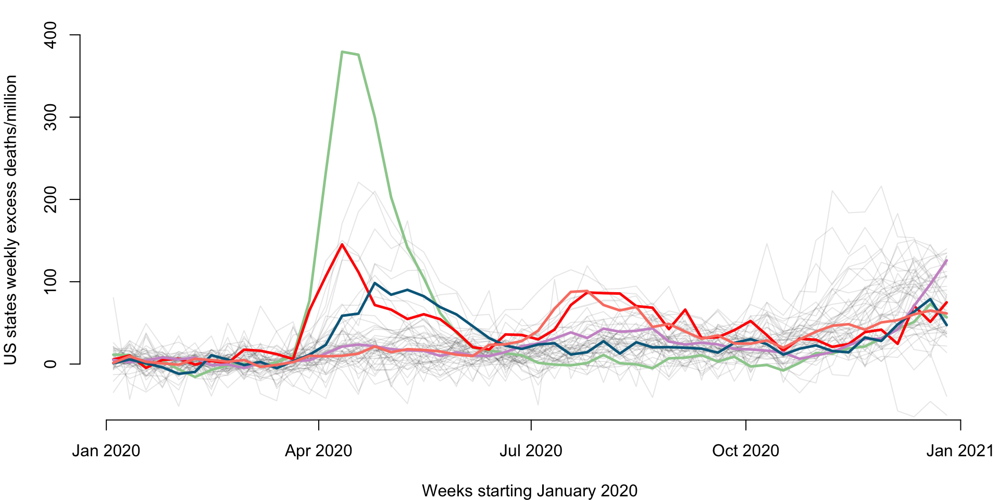
Plot the weekly mortality for each state (each dot represents a state). Each panel corresponds to a specific week on the x-axis and another specific week on the y-axis. This plot will be improved using code from Andrew.
par(mfrow = c(4, 4))
cmar <- c(3, 3, 0, 0)
par(mar = cmar)
plot(Wd[,10], Wd[,20], pch = 19, col = "blue", cex = .7, bty = "n", xlim = c(-40, 150),
ylim = c(-40, 150), main = "", xlab = "Week 10", ylab = "", axes = "FALSE")
mtext("Week 20", side = 2, cex = 0.5, line = 1.7)
axis(side = 2, at = c(0, 50, 100), labels = c(0, 50, 100), cex.axis = 0.7, tck = -0.1)
plot(0, type = 'n', axes = FALSE, ann = FALSE)
plot(0, type = 'n', axes = FALSE, ann = FALSE)
plot(0, type = 'n', axes = FALSE, ann = FALSE)
plot(Wd[,10], Wd[,30], pch = 19, col = "blue", cex = .7, bty = "n", xlim = c(-40, 150), ylim = c(-40, 150), axes = "FALSE")
axis(side = 2, at = c(0, 50, 100), labels = c(0, 50, 100), cex.axis = 0.8, tck = -0.1)
mtext("Week 30", side = 2, cex = 0.5, line = 1.7)
plot(Wd[,20], Wd[,30], pch = 19, col = "blue", cex = .7, bty = "n", xlim = c(-40, 150), ylim = c(-40, 150), axes = "FALSE")
plot(0, type = 'n', axes = FALSE, ann = FALSE)
plot(0, type = 'n', axes = FALSE, ann = FALSE)
plot(Wd[,10], Wd[,40], pch = 19, col = "blue", cex = .7, bty = "n", xlim = c(-40, 150), ylim = c(-40, 150), axes = "FALSE")
axis(side = 2, at = c(0, 50, 100), labels = c(0, 50, 100), cex.axis = 0.8, tck = -0.1)
mtext("Week 40", side = 2, cex = 0.5, line = 1.7)
plot(Wd[,20], Wd[,40], pch = 19, col = "blue", cex = .7, bty = "n", xlim = c(-40, 150), ylim = c(-40, 150), axes = "FALSE")
plot(Wd[,30], Wd[,40], pch = 19, col = "blue", cex = .7, bty = "n", xlim = c(-40, 150), ylim = c(-40, 150), axes = "FALSE")
plot(0, type = 'n', axes = FALSE, ann = FALSE)
plot(Wd[,10], Wd[,50], pch = 19, col = "blue", xlim = c(-40, 150), ylim = c(-40, 150), cex = 0.7, axes = "FALSE")
axis(side = 1, at = c(0, 50, 100), labels = c(0, 50, 100), cex.axis = 0.8, tck = -0.1)
axis(side = 2, at = c(0, 50, 100), labels = c(0, 50, 100), cex.axis = 0.8, tck = -0.1)
mtext("Week 10", side = 1, cex = 0.5, line = 1.7)
mtext("Week 50", side = 2, cex = 0.5, line = 1.7)
plot(Wd[,20], Wd[,50], pch = 19, col = "blue", xlim = c(-40, 150), ylim = c(-40, 150), cex = 0.7, axes = "FALSE")
axis(side = 1, at = c(0, 50, 100), labels = c(0, 50, 100), cex.axis = 0.8, tck = -0.1)
mtext("Week 20", side = 1, cex = 0.5, line = 1.7)
plot(Wd[,30], Wd[,50], pch = 19, col = "blue", xlim = c(-40, 150), ylim = c(-40, 150), cex = 0.7, axes = "FALSE")
axis(side = 1, at = c(0, 50, 100), labels = c(0, 50, 100), cex.axis = 0.8, tck = -0.1)
mtext("Week 30", side = 1, cex = 0.5, line = 1.7)
plot(Wd[,40], Wd[,50], pch = 19, col = "blue", xlim = c(-40, 150), ylim = c(-40, 150), cex = 0.7, axes = "FALSE")
axis(side = 1, at = c(0, 50, 100), labels = c(0, 50, 100), cex.axis = 0.8, tck = -0.1)
mtext("Week 40", side = 1, cex = 0.5, line = 1.7)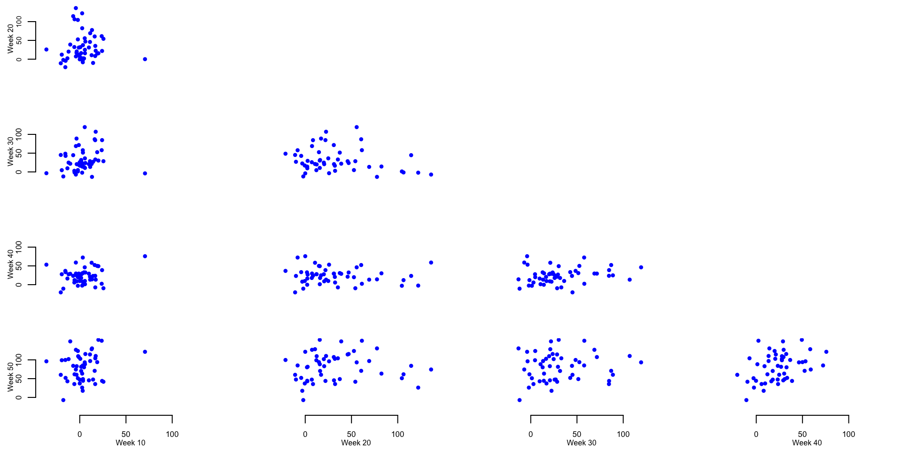
Calculate the mean and median of the excess mortality rate per one million residents for several weeks across 52 states and territories. This is used to provide basic summaries and exploratory data analyses to further investigate the patterns shown in the panels containing scatterplots of weekly excess mortality rates.
meanWd10 <- mean(Wd[,10])
medianWd10 <- median(Wd[,10])There is an average of 3.3 and a median of 2.63 excess deaths per million in week 10 (week ending on March 7, 2020).
Identify the outlier in week 10 and investigate its properties
ind_out <- which.max(Wd[,10])
state_out <- new_states[ind_out]
val_out <- round(Wd[ind_out, 6:14], digits = 1)The outlier observed on week 10 is North Dakota with 10.5, -17, 49.7, 10.5, 70.6, 39.2, 6.5, -30.1, -41.8 excess mortality on weeks \(6\) through \(14\) from the beginning of the year.
Identify the top \(5\) states that on week \(20\) have the largest weekly excess mortality rate.
topweek20 <- round(Wd[order(Wd[,20])[48:52],20], digits = 1)
states_top_20 <- new_states[order(Wd[,20])[48:52]]The five states with the highest excess mortality rate for week 20 are New Jersey, Connecticut, Delaware, Massachusetts, District of Columbia with 104.5, 106.3, 114.5, 122.1, 136.1 excess mortality rate per one million residents, respectively.
Identify the top \(5\) states that on week \(30\) have the largest weekly excess mortality rate.
topweek30 <- round(Wd[order(Wd[,30])[48:52],30], digits = 1)
states_top_30 <- new_states[order(Wd[,30])[48:52]]The five states with the highest excess mortality rate for week 20 were South Carolina, Louisiana, Texas, Arizona, Mississippi with 84.7, 87, 88.8, 107, 119.3 excess mortality rate per one million residents, respectively.
Identify the top \(5\) states that on week \(40\) have the largest weekly excess mortality rate.
topweek40 <- round(Wd[order(Wd[,40])[48:52],40], digits = 1)
states_top_40 <- new_states[order(Wd[,40])[48:52]]The five states with the highest excess mortality rate for week 20 were Wyoming, Missouri, District of Columbia, Arkansas, North Dakota with 53.2, 58.4, 58.9, 72.3, 75.8 excess mortality rate per one million residents, respectively.
We now conduct K-means clustering for the excess mortality rate data.
For now we do not use smoothing or other types of functional approaches.
We treat the rows of matrix Wd (states) as independent
multivariate observations recorded by rows (each row corresponds to a
state).
rownames(Wd) <- new_states
set.seed(1000)
kmeans_CV19_3 <- kmeans(Wd, centers = 3)
cl_ind <- kmeans_CV19_3$cluster
cl_cen <- kmeans_CV19_3$centersPlot (code hidden) the excess mortality rates for each state and territory as a function of week from the beginning of 2020. Each color corresponds to a cluster and the thicker lines of the same color indicate the cluster centers.
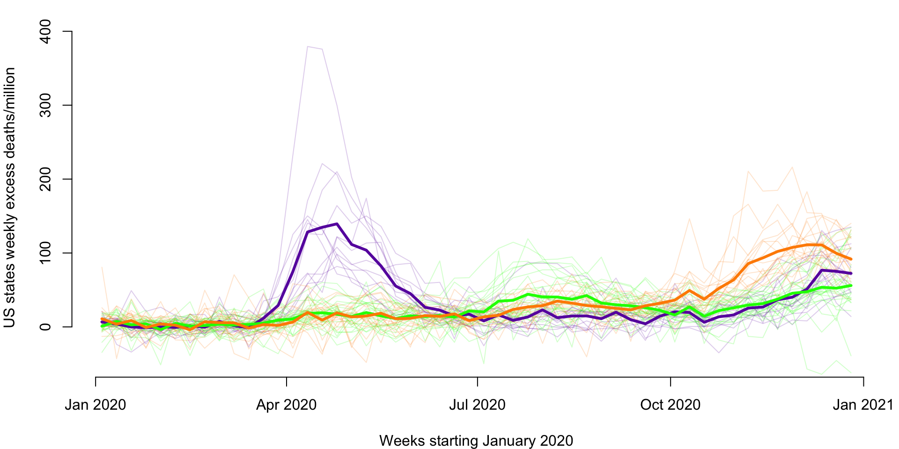
Make a US map to better indicate the spatial localizaton of the three clusters estimated by k-means based on the 2020 un-smoothed weekly excess mortality rates. The code below shows how to produce this type of map and will be used again for US maps.
library(usmap)
library(ggplot2)
library(tidyverse)
#Define a color per group
colset <- c(rgb(0.41, 0.05, 0.68), rgb(0, 1, 0), rgb(1, .55, 0))
## load state date which contains FIPS code
data("statepop")
## create a data frame to plot based on the input requirement
state_cluster <- data.frame(full = names(cl_ind), cluster = unname(cl_ind))
data_cluster <- statepop %>%
left_join(state_cluster, by = "full") %>%
select(fips, cluster)
data_cluster$cluster <- as.factor(data_cluster$cluster)
## make the US map
p <- plot_usmap(regions = "states", data = data_cluster, values = "cluster") +
scale_fill_manual(name = "Cluster", values = colset) +
labs(title = "") +
theme(legend.position = "right",
plot.title = element_text(hjust = 0.5, face = "bold"))
print(p)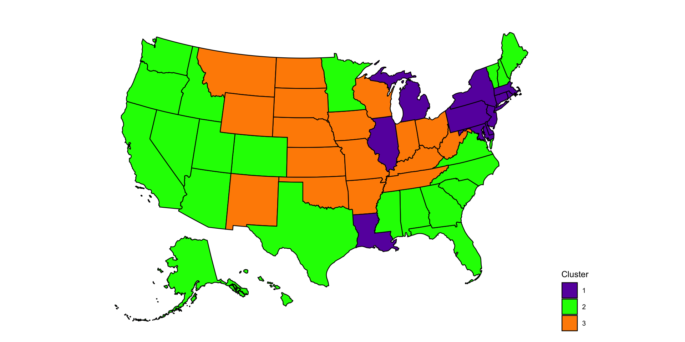
Recall that the data are contained in the matrix Wd, a
\(52\times 52\) dimensional matrix,
where each state is a row and each column is a week of 2020.
library(gplots) ##Available from CRAN
library(RColorBrewer)
library(viridis)
library(dendextend)
#Calculate the matrix of distances
dM <- dist(Wd[,]) ^ 2
#Hierarchical clustering on the square Euclidian distances
hc <- hclust(dM, method = "ward.D2")Plot the dendogram. This code uses the package
dendextend, though better plotting may be available in
other packages. This package allows to color code the dendograms
according to a specific clustering (in our case obtained by cutting the
result of hierarchical clustering to form five clusters).
#Set the cluster colors (five clusters)
clust.col <- c("#E69A8DFF", "#F6D55C", "#2A9D8F", "#5F4B8BFF", "#ee7600")
#Set the dendogram
hcd <- as.dendrogram(hc)
hcd <- hcd %>%
color_branches(k = 5, col = clust.col) %>%
set("branches_lwd", c(2, 2, 2, 2, 2)) %>%
set("branches_lty", c(1, 1, 1, 1, 1))
cmar <- c(4, 4, 1, 1)
par(mar = cmar)
nodePar <- list(lab.cex = 0.6, pch = NA)
plot(hcd, nodePar = nodePar, axes = FALSE, ylab = "Distance (Ward.D2)",
ylim = c(0, 750000), cex.lab = 0.6)
axis(2, at = c(0, 250000, 500000, 750000),
labels = c("0", "250K", "500K", "750K"), cex.axis = 0.6, lwd = 1)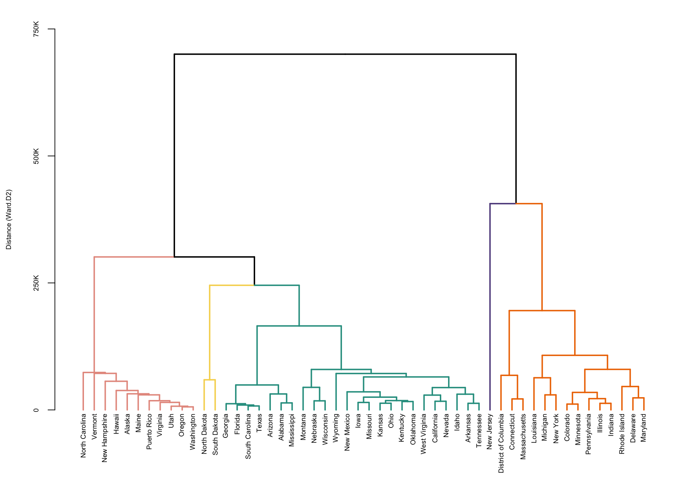
A complementary way of plotting these results is to display the
heatmap of the data together with the clustering of the rows of the
matrix (states). The clustering re-orders the states (which were
organized in alphabetic order) to match with the hierarchical
clustering. We could have clustered the columns (weeks) as well, but in
this application we are interested in preserving the natural flow of
time. Here we used the function Heatmap in the
R package ComplexHeatmap. Note that the
capital letter H in Heatmap matters! Other functions we
have tried seemed more finicky, but the user is encouraged to try other
packages and heatmap functions.
par(mfrow = c(1, 1))
par(mar = c(4, 4, 4, 4))
#This package is on Bioconductor but not on Cran
if (!require("BiocManager", quietly = TRUE))
install.packages("BiocManager")
BiocManager::install("ComplexHeatmap")
## Warning: package(s) not installed when version(s) same as or greater than current; use
## `force = TRUE` to re-install: 'ComplexHeatmap'
library(ComplexHeatmap)
library(circlize)
#Set a set of breaks in the colors to account for the large outliers in New Jersey.
breaks <- c(-50, seq(-40, 130, by = 1), 200, 250, 300)
#Often heatmaps can be heavly affected by outliers.
#This requires careful mapping of colors
hmcol <- plasma(length(breaks))
mycol <- colorRamp2(breaks = breaks, col = hmcol)
cmar <- c(4, 4, 1, 1)
par(mar = cmar)
#Plot the heatmap with the row dendogram
Heatmap(Wd, name = "EMR", col = mycol,
row_names_gp = gpar(fontsize = 8),
column_names_gp = gpar(fontsize = 5), cluster_columns = FALSE,
cluster_rows = color_branches(hc, k = 5, col = clust.col))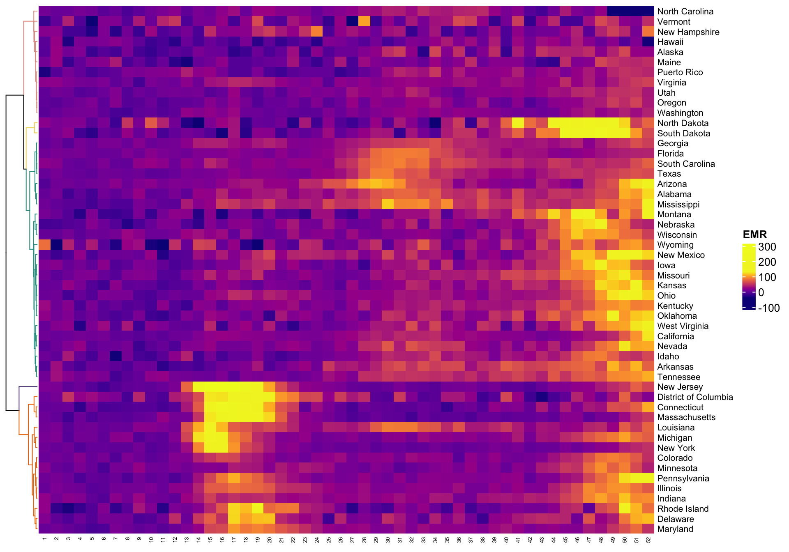
We want to plot the clusters on the US map. One of the problems is that clusters are not labeled in increasing order from left to right (as plotted), but in the sequence in which they are split from the root of the tree. Thus, we need to relabel clusters to remain consistent with the left/right presentation of clusters.
cut_wardd2 <- cutree(hc, k = 5)
loc_cut <- cut_wardd2
loc_cut[cut_wardd2 == 2] <- 1
loc_cut[cut_wardd2 == 5] <- 2
loc_cut[cut_wardd2 == 1] <- 3
loc_cut[cut_wardd2 == 4] <- 4
loc_cut[cut_wardd2 == 3] <- 5
cut_wardd2 <- loc_cut
## load state date which contains FIPS code
data("statepop")
state_cluster <- data.frame(full = names(cut_wardd2), cluster = unname(cut_wardd2))
data_cluster <- statepop %>%
left_join(state_cluster, by = "full") %>%
select(fips, cluster)
data_cluster$cluster <- as.factor(data_cluster$cluster)
## make the US map
p <- plot_usmap(regions = "states", data = data_cluster, values = "cluster") +
scale_fill_manual(name = "Cluster", values = clust.col) +
labs(title = "") +
theme(legend.position = "right",
plot.title = element_text(hjust = 0.5, face = "bold"))
cmar <- c(4, 4, 1, 1)
par(mar = cmar)
print(p)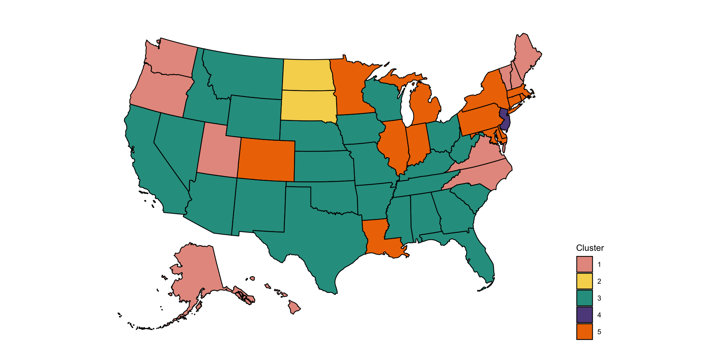
Distributional clustering is an approach that fits mixtures of
multivariate distributions. The most common approach is mixture of
Gaussian distributions, but t-distributions, spherical distributions
could also be considered. Here we will use the mclust
package, though other packages exist including mixtools,
clusterR, and flexmix.
#Set the color palette
colset <- c("#E69A8DFF", "#F6D55C", "#2A9D8F", "#5F4B8BFF")
library(mclust)
#Center and scale the data
X <- as.data.frame(apply(Wd, 2, scale))
#Calculate BIC for distributional clustering
BIC <- mclustBIC(X)
#Fit GMM using EM algorithm with 4 clusters suggested by BIC
mod <- Mclust(X, x = BIC)
#Obtain clustering results
res <- mod$classificationPlot the US map of four clusters obtained from the distributional clustering of the multivariate distributions.
state_cluster <- data.frame(full = names(cut_wardd2), cluster = res)
data_cluster <- statepop %>%
left_join(state_cluster, by = "full") %>%
select(fips, cluster)
data_cluster$cluster <- as.factor(data_cluster$cluster)
## make the US map
p <- plot_usmap(regions = "states", data = data_cluster, values = "cluster") +
scale_fill_manual(name = "Cluster", values = colset) +
labs(title = "") +
theme(legend.position = "right",
plot.title = element_text(hjust = 0.5, face = "bold"))
cmar <- c(4, 4, 1, 1)
par(mar = cmar)
print(p)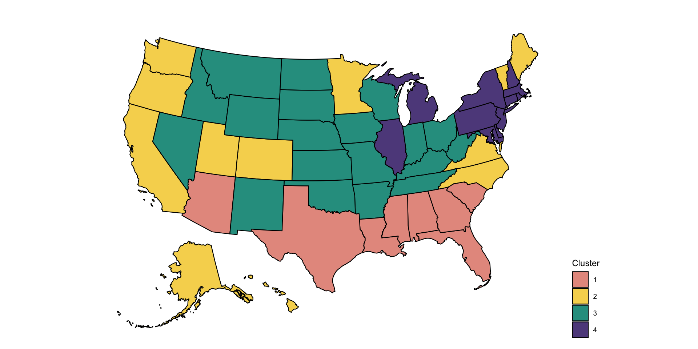
So far we have treated functional data as multivariate data and
simply applied existing clustering techniques. However, there is
something special about functional data. It can be observed with a lot
of noise, which may require some type of smoothing. Smoothing can be
done either directly, function-by-function or by using a smooth
functional PCA approach. Here we explore transforming the data using
functional PCA and then using clustering on: (1) the scores of the
principal components; and (2) the smooth estimators of the functions. We
will use the function fpca.face from the
refund package based on the COVID weekly excess mortality
data.
Conduct functional PCA
t <- 1:dim(Wd)[2]
#Apply functional PCA using the FACE approach
results <- fpca.face(Y = Wd, Y.pred = Wd, center = TRUE, argvals = t,
knots = 35, pve = 0.99, var = TRUE)
#Obtain the eigenfunctions and eigenvalues
Phi <- results$efunctions
eigenvalues <- results$evalues
#Obtain the estimated covariance and correlation matrices
cov_est <- Phi %*% diag(eigenvalues) %*% t(Phi)
cor_est <- cov2cor(cov_est)
#Obtain the scores and the predicted functions
PC_scores <- results$scores
Pred <- results$Yhat#Name to columns and rows of the covariance
colnames(cov_est) <- 1:52
rownames(cov_est) <- 1:52
colnames(cor_est) <- 1:52
rownames(cor_est) <- 1:52Below we provide a plot of the first three principal components. The x-axis is time in weeks starting in January 2020.
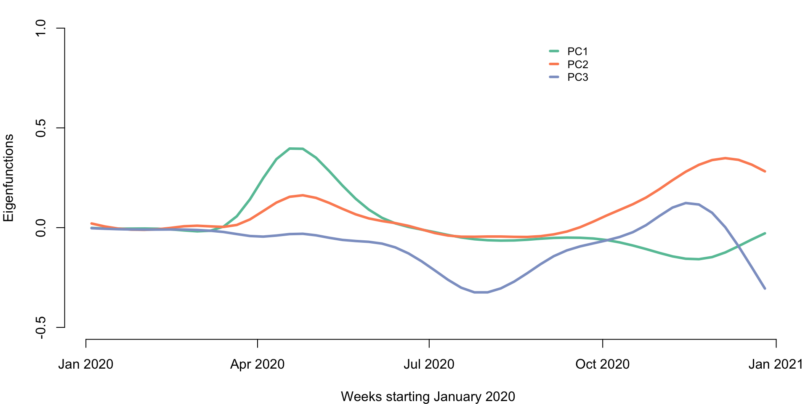
We now conduct clustering of the data using the PC scores. We use the first three principal components and use K-means with \(3\) clusters. We compare the clustering based on the raw data with clustering based on the functional PCA scores.
rownames(PC_scores) <- new_states
set.seed(1000)
kmeans_CV19_3 <- kmeans(PC_scores[,1:3], centers = 3)
cl_ind_sc <- kmeans_CV19_3$cluster
cl_cen_sc <- kmeans_CV19_3$centers
#This shows that the two approaches to K-means provide identical results
table(cl_ind, cl_ind_sc)
## cl_ind_sc
## cl_ind 1 2 3
## 1 12 0 0
## 2 0 23 0
## 3 0 0 17Plot the scores on the first three principal components together with the colors of the clusters. The x-axis are the scores on PC1 and the y-axis represents the scores on PC2 (top panel) and PC3 (bottom panel), respectively.
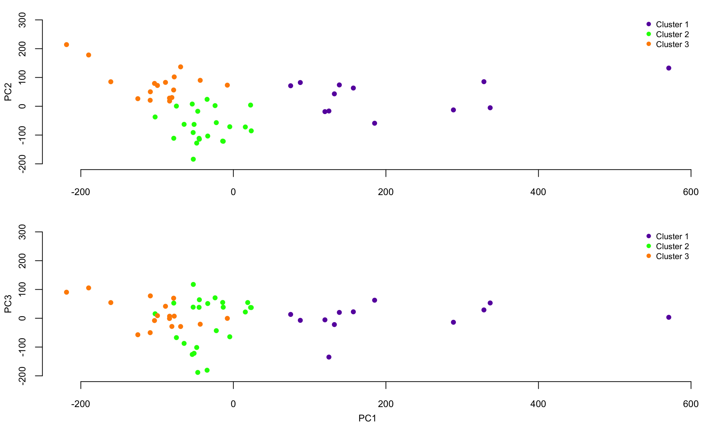
Plot the smooth covariance and correlation function estimates
breaks <- c(seq(-2000, -1000, length.out = 10), seq(-900, 900, length.out = 100),
seq(1000, 2000, length.out = 10))
hmcol <- magma(length(breaks))
mycol <- colorRamp2(breaks = breaks, col = hmcol)
Heatmap(cov_est, col = mycol, name = "Covariance",
row_names_gp = gpar(fontsize = 5),
column_names_gp = gpar(fontsize = 5), cluster_columns = FALSE,
cluster_rows = FALSE)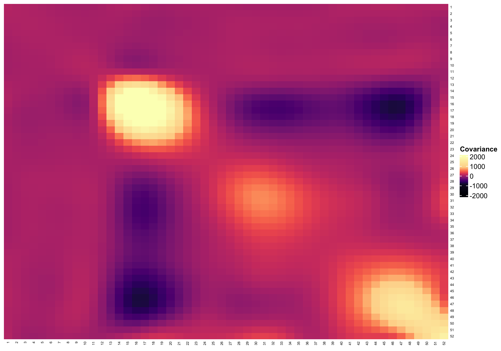
breaks <- c(seq(-0.5, 0, length.out = 200), seq(0.01, 0.9, length.out = 100),
seq(0.91, 1, length.out = 20))
hmcol <- magma(length(breaks))
mycol <- colorRamp2(breaks = breaks, col = hmcol)
Heatmap(cor_est, col = mycol, name = "Correlation",
row_names_gp = gpar(fontsize = 5), column_names_gp = gpar(fontsize = 5),
cluster_columns = FALSE,
cluster_rows = FALSE)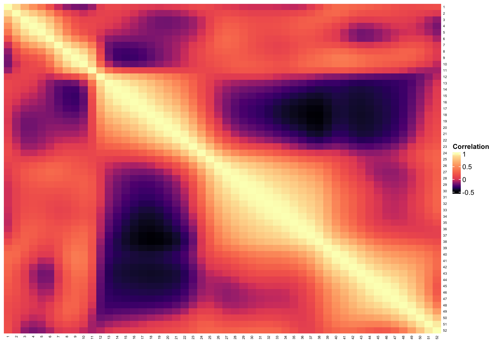
So far, we have shown results based on K-means clustering of PC scores. However, we can use any other type of clustering. Below we show how to conduct hierarchical smoothing using the PC scores on the first 11 PCs
dM <- dist(PC_scores[,1:11]) ^ 2
#Apply hierarchical clustering
hc_sc <- hclust(dM, method = "ward.D2")
cut_wardd2_sc <- cutree(hc_sc, k = 5)In the COVID-19 excess mortality rate example, there is no difference between K-means clustering of the raw data or PC scores. The reason for that is likely that the data has very little noise.
Therefore, it makes a lot of sense to investigate when functional data analysis may make a difference in the case of clustering. To do that we build a simple simulation exercise, where the true data has two clusters. To these data we add different levels of noise and investigate how clustering approaches compare when we use the raw data and the principal component scores after functional PCA (FPCA) smoothing.
Define functional data with two clusters. The first cluster contains constant functions \(f_i\{(j-1)/n\}=-0.2+0.2*(i-1)/n\), for \(i=1,\ldots,I=101\) and \(j=1,\ldots,J=101\). Therefore, functions are observed at an equal grid of points between \([0,1]\), each function is constant, and constants increase from \(-0.2\) to \(0.2\) in equal increments. The second cluster contains the functions \(f_i\{(j-1)/n\}=\{0.8+0.4(i-102)/101\}\sin\{2\pi(j-1)/n\}\) for \(i=102,\ldots,202\) and \(j=1,\ldots,J=101\). These are sinus functions with various amplitudes from \(0.8\) to \(1.2\) evaluated at the same grid of equally spaced observations between \([0,1]\).
n_dom <- 101
t <- seq(0, 1, length = n_dom)
a <- seq(-0.2, 0.2, length = 101)
b <- seq(0.8, 1.2, length = 101)
cl1 <- matrix(rep(a, each = 101), ncol = 101, byrow = TRUE)
cl2 <- matrix(rep(t, 101), ncol = 101, byrow = TRUE)
cl2 <- diag(b)%*% sin(2*pi*cl2)
true_data <- rbind(cl1, cl2)Display the true underlying data with corresponding clusters indicated by red and blue colors.
par(mar = c(4, 4, 1, 1))
blues <- colorRampPalette(brewer.pal(9, "Blues"))(100)
reds <- colorRampPalette(brewer.pal(9, "Reds"))(100)
plot(t, true_data[1,], ylim = c(-1.5, 1.5), col = reds[25],
type = "l", lwd = 2, xlab = "Time", ylab = "Outcome", bty = "n")
for(i in 1:10){
lines(t, true_data[1 + 10 * i,], col = reds[25 + 7 * i], lwd = 2)
}
for(i in 1:11){
lines(t, true_data[102 + 10 * (i - 1),], col = blues[25 + 7 * (i - 1)], lwd = 2)
}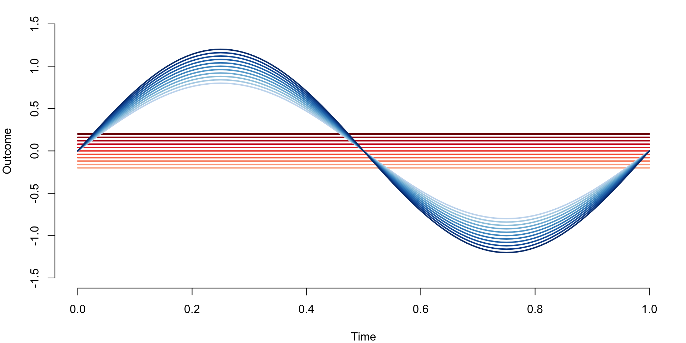
true_clust <- c(rep(1, 101), rep(2, 101))
cl_kmeans <- kmeans(true_data, centers = 2)
cl_ind <- cl_kmeans$cluster
#Check that K-means can identify the two clusters
table(true_clust, cl_ind)
## cl_ind
## true_clust 1 2
## 1 0 101
## 2 101 0We now conduct a simulation where we simulate from the model \[w_i(t_j)=f_i(t_j)+\sigma\epsilon_{ij}\;,\]
where \(t_j=(j-1)/101\), \(i=1,\ldots,202\), \(\epsilon_{ij}\) are mutually independent
\(N(0,1)\) random variables and \(\sigma\) controls the amount of noise
around the functions. For each sigma we simulate nsim=500
data sets, and use K-means with \(2\)
clusters on: (1) the raw simulated data; and (2) on the scores on the
principal components taht explain \(99\)% of the variance after removing the
estimated noise variance.
#Number of entries in the true data matrix
n <- dim(true_data)[1] * dim(true_data)[2]
#Noise levels
sigmav = c(0, 1, 2, 3, 4, 5, 10)
nsigma = length(sigmav)
#Number of simulations for each sigma
#nsim = 500
#This is used to compile only. Results should be obtained using n = 500 simulations
nsim = 5
#Define the matrices that store missclassification rates
#Each row corresponds to a simulation
#Each column corresponds to a noise level
prop_missclass_raw <- matrix(rep(NA, nsigma * nsim), ncol = nsigma)
prop_missclass_scores <- matrix(rep(NA, nsigma * nsim), ncol = nsigma)
for(i in 1:nsim){ #Begin simulations
for(j in 1:nsigma){ #Begin looping over levels of noise
sigma <- sigmav[j]
#Simulate noisy functional data
sim_noise <- matrix(rnorm(n), ncol = dim(true_data)[2])
sim_data <- true_data+sigma*sim_noise
#Conduct clustering directly on the raw data (signal+noise)
cl_kmeans_raw <- kmeans(sim_data, centers = 2)
cl_ind_raw <- cl_kmeans_raw$cluster
#Conduct clustering on the smooth estimators (scores)
results <- fpca.face(Y = sim_data, Y.pred = sim_data, center = TRUE,
argvals = t, knots = 35, pve = 0.99, var = TRUE)
#Obtain the scores
PC_scores <- results$scores
#Apply K-means to the FPCA scores
cl_kmeans_scores <- kmeans(PC_scores, centers = 2)
cl_ind_scores <- cl_kmeans_scores$cluster
#Obtain the classification tables
temp_raw <- table(true_clust, cl_ind_raw)
temp_scores <- table(true_clust, cl_ind_scores)
#Calculate the miss-classification for raw and PC scores
prop_missclass_raw[i, j] <- min(sum(diag(temp_raw)), sum(temp_raw)-
sum(diag(temp_raw))) / (sum(temp_raw))
prop_missclass_scores[i, j] <- min(sum(diag(temp_scores)), sum(temp_scores)-
sum(diag(temp_scores))) / (sum(temp_scores))
}#End loop over noise levels
}#End loop over simulations
#Calculate miss-classification rates
miss_raw <- colMeans(prop_missclass_raw)
miss_scores <- colMeans(prop_missclass_scores)Plot the missclassification rates for k-means clustering with two clusters for raw data and FPCA scores respectively as a function of the standard deviation of the measurement error.
par(mar = c(4, 4, 1, 1))
plot(sigmav,miss_raw, type = "l", lwd = 3,
col = "#66c2a5", bty = "n", ylim = c(0, 0.6),
xlab = "Standard deviation of error",
ylab = "Missclassification rate")
lines(sigmav, miss_scores, lwd = 3, col = "#fc8d62")
legend(8, 0.6, c("Raw", "FPCA"), lty = c(1, 1), seg.len = 0.8, lwd = c(3, 3),
col = c("#66c2a5", "#fc8d62"), cex = 0.8, bty = "n", y.intersp = 1)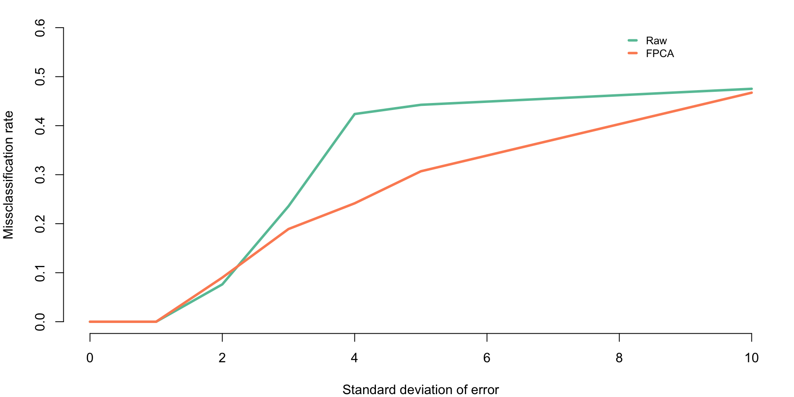
Here we use the CD4 counts data and the face.sparse function. CD4 observations are sparse, which makes direct clustering of the observed data impossible. Instead, we are predicting each curve at a grid of observations and use these predicted functions in clustering software. We also obtain the scores, which could be used for clustering, but we use the predicted functions for illustration.
We use the function from the package. This function uses penalized splines smoothing to estimate the covariance and correlation and produce predictions.
library(face)
library(refund)
#Load the data
data(cd4)
n <- nrow(cd4)
T <- ncol(cd4)
#Construct a vectorized form of the data
id <- rep(1:n, each = T)
t <- rep(-18:42, times = n)
y <- as.vector(t(cd4))
#Indicator for NA observations. This takes advantage of the sparse nature of the data
sel <- which(is.na(y))
#Organize data as outcome, time, subject ID
data <- data.frame(y = log(y[-sel]), argvals = t[-sel],
subj <- id[-sel])
data <- data[data$y > 4.5,]
#Provide the structure of the transformed data
head(data)
## y argvals subj....id..sel.
## 1 6.306275 -9 1
## 2 6.794587 -3 1
## 3 6.487684 3 1
## 4 6.622736 -3 2
## 5 6.129050 3 2
## 6 5.198497 9 2
#Fit the sparse smoother face.sparse
#This call extracts the scores, as well
fit_face <- face.sparse(data, argvals.new = (-20:40),
calculate.scores = TRUE,
newdata = data, pve = 0.95)
#Obtain the scores. Clustering could be done on the scores
#This time we will conduct clustering on the predicted functions
scores <- fit_face$scores$scores
data.h <- data
tnew <- fit_face$argvals.newConstruct the predicted functions for each study participant. This is
obtained from the fpca.sparse function fit.
#Extract the id vector and the vector of unique ids
id <- data.h$subj
uid <- unique(id)
#Set the grid where to predict
seq <- -20:40
k <- length(seq)
#Set the matrix that contains the predictions
Pred_mat <- matrix(rep(NA, n*k), ncol = k)
#Predict every curve
for(i in 1:n){ #Begin loop over study participants
#Select the i-th study participant
sel <- which(id == uid[i])
dati <- data.h[sel,]
#Set the frmework for data prediction
#With this framework it predicts at the grid and where observations were taken
#This is why vectors are longer than the length of the grid
dati_pred <- data.frame(y = rep(NA, nrow(dati) + k ),
argvals = c(rep(NA, nrow(dati)), seq),
subj = rep(dati$subj[1], nrow(dati) + k )
)
#This is where the data is populated
dati_pred[1:nrow(dati),] <- dati
yhat2 <- predict(fit_face, dati_pred)
#Extract just the predictions on the grid
Ord <- nrow(dati) + 1:k
temp_pred <- yhat2$y.pred[Ord]
Pred_mat[i,] <- temp_pred
}Conduct clustering of predicted functions from fpca sparse
set.seed(202200228)
cl_kmeans_CD4 <- kmeans(Pred_mat, centers = 3)
cl_ind_CD4 <- cl_kmeans_CD4$cluster
cl_cen_CD4 <- cl_kmeans_CD4$centersPlot the results of predicted CD4 curves together with the estimated clustering as well as centers of the clusters.
par(mar = c(4, 4, 1, 1))
colset <- c("#E69A8DFF", "#F6D55C", "#2A9D8F", "#5F4B8BFF")
plot(NULL, xlim = c(-20, 40), ylim = c(5, 8), xlab = "Time from seroconversion (months)",
ylab = "Log CD4 counts", bty = "n")
for(i in 1:n){
lines(seq, Pred_mat[i,], col = colset[cl_ind_CD4[i]])
}
lines(seq, cl_cen_CD4[1,], col = "darkred", type = "l", lwd = 3)
lines(seq, cl_cen_CD4[2,], col = "darkorange", lwd = 3)
lines(seq, cl_cen_CD4[3,], col = "darkgreen", lwd = 3)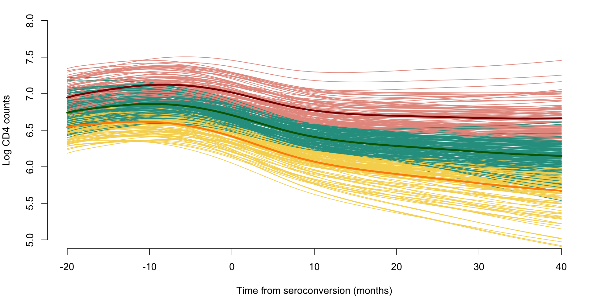
We also consider the case of NHANES data. Here we use the same NHANES dataset as that introduced in Chapter 7. We take the study participant specific average physical activity at every time point (minute) of the day over eligible days. These average trajectories are clustered using K-means with nine clusters.
library(tidyverse)
library(survival)
##
## Attaching package: 'survival'
## The following object is masked from 'package:face':
##
## pspline
library(mgcv)
library(refund)
df_cleaned <- readRDS("./data/nhanes_fda_with_r.rds")
df_cluster <- df_cleaned %>%
filter(!is.na(event))
dat.MIMS <- unclass(df_cluster$MIMS)
#kmeans on selected number of clusters
set.seed(100)
kmeans.MIMS <- kmeans(dat.MIMS, centers = 9) ## kmeans
orders <- order(-apply(kmeans.MIMS$centers, 1, max)) ## order by maximum MIMS
percent <- round(table(kmeans.MIMS$cluster) / nrow(dat.MIMS) * 100, 2)
## correlation of each cluster with demographic variables
clust_cor <- matrix(NA, nrow = length(unique(kmeans.MIMS$cluster)), ncol = 5)
clust_summary <- matrix(NA, nrow = length(unique(kmeans.MIMS$cluster)) + 1, ncol = 5)
colnames(clust_cor) <- colnames(clust_summary) <- c("Cluster", "event", "age", "BMI", "PIR")
for(k in 1:length(unique(kmeans.MIMS$cluster))){
clust_ind <- rep(0, nrow(dat.MIMS))
clust_ind[which(kmeans.MIMS$cluster == k)] <- 1
df_cluster$clust_ind <- clust_ind
clust_cor[k, 1] <- clust_summary[k, 1] <- k
clust_cor[k, 2:5] <- round(tail(cor(df_cluster[, c("event", "age", "BMI", "PIR", "clust_ind")],
use = "complete.obs"), 1)[1:4], 3)
clust_summary[k, 2:5] <- round(apply(df_cluster[which(kmeans.MIMS$cluster == k),
c("event", "age", "BMI", "PIR")], 2,
function(x) mean(x, na.rm = TRUE)), 3)
}
clust_summary[nrow(clust_summary), 1] <- 0
clust_summary[nrow(clust_summary), 2:5] <- round(apply(df_cluster[, c("event", "age", "BMI", "PIR")],
2, function(x) mean(x, na.rm = TRUE)), 3)
#reorder cluster by age
par(mfrow = c(3, 3), mar = c(4, 4, 2, 1))
for(i in 1:nrow(kmeans.MIMS$centers)){
plot(kmeans.MIMS$centers[order(clust_summary[1:9, "age"])[i],], type = "l",
ylim = c(0, max(kmeans.MIMS$centers)),
# ylim = c(0, 30),
xaxt = "n", ylab = "", xlab = "",
main = paste0("Cluster ", i, ", ", percent[order(clust_summary[1:9, "age"])[i]], "%") )
axis(side = 1, at = c(1, 6, 12, 18, 23)*60, labels = c("01:00", "06:00", "12:00", "18:00", "23:00"))
mtext(side = 1, text = "Time of day", line = 2.4, cex = 0.8)
mtext(side = 2, text = "MIMS", line = 2, cex = 0.8)
}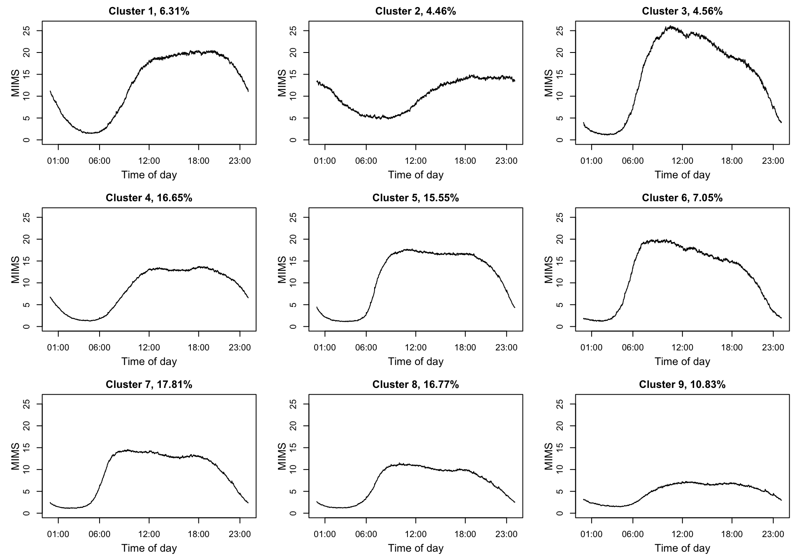
clust_summary[order(clust_summary[1:9, "age"]),]
## Cluster event age BMI PIR
## [1,] 8 0.022 33.904 27.340 1.850
## [2,] 5 0.046 35.362 29.029 1.772
## [3,] 7 0.020 40.975 27.502 1.894
## [4,] 6 0.053 41.644 28.726 2.275
## [5,] 1 0.027 43.994 27.803 2.436
## [6,] 3 0.039 49.059 28.084 2.548
## [7,] 4 0.065 52.739 29.342 2.939
## [8,] 2 0.155 59.261 30.279 2.666
## [9,] 9 0.349 60.989 30.565 2.165